| ダンスを仕事にするスキルvol.4 | |
| 杉山トシツグ | |
| UNKNOWN (2018) | |
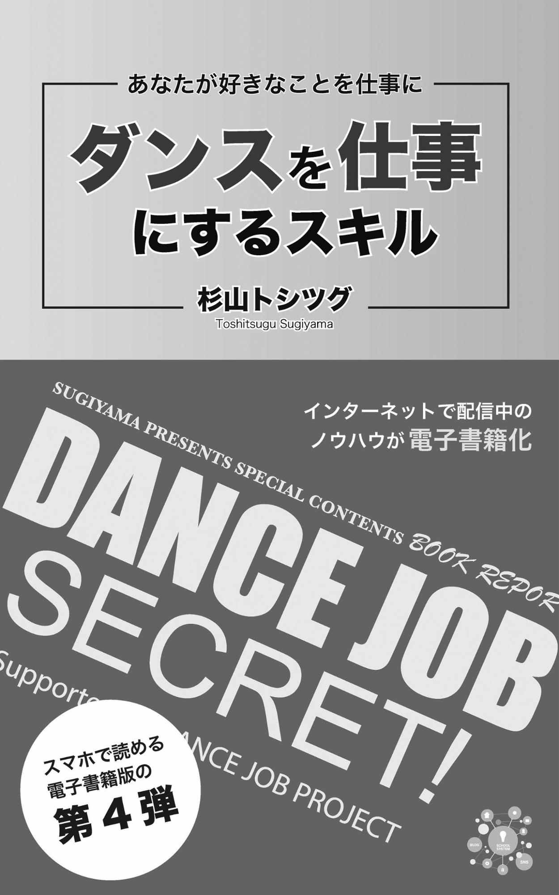
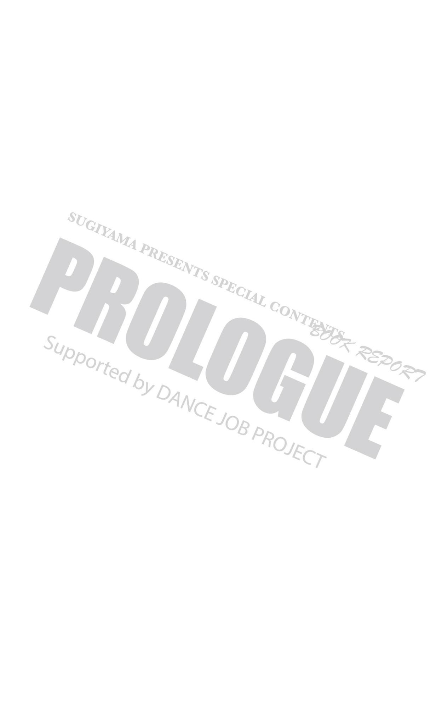
「集客のことを考えずに、好きなダンスだけを考えたい」
ある日、ベリーダンスの先生と会話をしていた時に、ふと出てきたセリフでした。
そうなんですね。
ダンスの教室を仕事にしている先生は、そもそも好きだからやっているんです。
ビジネスをバリバリやりたいから始めたわけではありません。
なので、このセリフは本当に心から出てきた言葉だと思います。
しかし、これだけダンス教室が増えてくると、さすがに生徒集客についても考えなければいけなくなります。
そもそも、このシリーズ本を考えた背景には、ビジネス本にはしたくなかったという想いがあります。
マーケティングの専門用語を並べて、長い文章を読み進めていくのではなく
電車の移動の合間や、空き時間で読んでいくことができる、分かりやすいシリーズ本を作りたかったのです。
著書『私はダンスで食っていく』とは別に、このシリーズ本は第3弾まで出版してきました。
今回の第4弾は、今までの第3弾までのシリーズを纏めたような構成になっています。
ぜひ、読み進めてみて下さい。
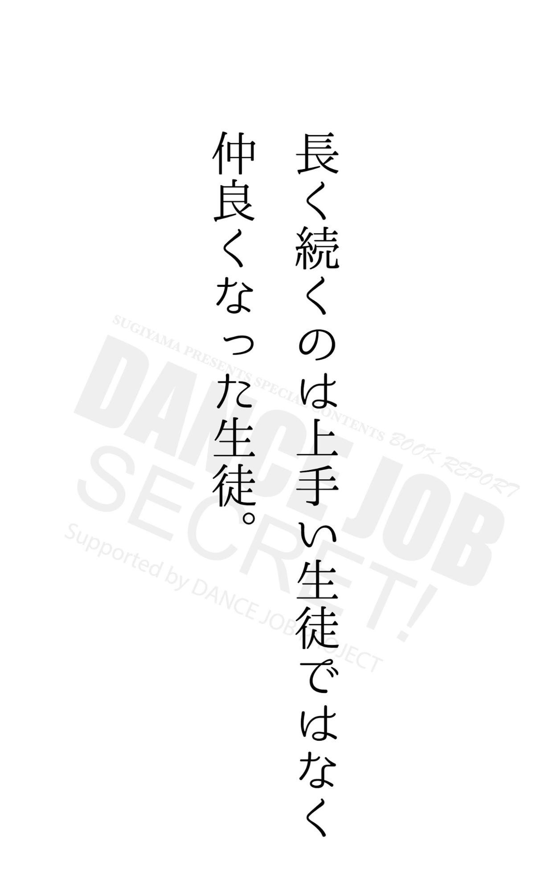
俳優を目指している人が
まだ仕事が少ないのでアルバイトをしています。
「あなたの職業は？」と聞かれると
「俳優です！」と答えるでしょう。
この人の優先度は、俳優の仕事です。
たぶん俳優の仕事が入ると、アルバイトよりも優先させます。
あなたは、優先できてますか？
アルバイトが入ってるから、レッスンを増やせないとか・・
「あなたは、ダンサー？」
「それとも、フリーター？」
ダンスで食っていこうと思ったのであれば、バイトを優先させるという考えでは、未来はないですよ。
俳優の方の話を思い出してください。
今は難しいので、アルバイトをしているのかもしれませんが、それがメインとなってしまうといけないんです。
ダンスで仕事をすると決めたら、自分の仕事は「ダンスがメインなんだ」と考えなければいけません。
ダンスの仕事を優先させましょう。
あなたは「ダンサー」なのだから。
「ここで始めたら人が来ますよ。」
レッスンをしていると、保護者や生徒から、こういった声が出る時があります。
でも、それを真に受けて開いてしまうと失敗します。
なぜなら、一部の意見や希望的な想いから言ってる部分が多いからです。
確かに、それで上手くいくこともあるかもしれません。
しかし、失敗する場合がほとんどです。
この記事を読んでいるインストラクターやスタジオのオーナーさんも、実際にそういった経験があるのではないでしょうか。
こういった声はあくまでも、最初のきっかけでしかありません。
その意見が「思います」のレベルだからです。
逆に、そういったきっかけをうまく活用するために行うことが「テスト」です。
実際にレッスンを開催して人が集まるのかテストしてみなければわかりません。
そのために「体験レッスン」というものを開くべきです。体験レッスン（無料体験やワンコイン）を開いて、実際に人が集まればレッスンを開講できる可能性は高くなります。
1度開催してみると、その地域の方達には認知されるので、開校するとなった場合でも、アプローチしやすくなります。
ここで大切なのは、体験レッスンの際の参加者のリストを必ず取っておくということ。
メールアドレスや住所などをとっておき、実際に開校する際にはメールを送ったり、葉書を送ったりなどの対策を取るべきです。このリストというものは必ずいるので、絶対に参加者からリストアップ出来るようにしておきましょう。
リストを集めないのは、紐をつけずにバンジージャンプをするようなものですからね。
いずれにせよ、体験レッスンをした場合に人が集まらなかったら、やめておくべきではないでしょうか。
実際に教室に通っているスクール生の声を拾っていますか?
声といっても、一般のビジネスでいう「お客様の声」のような感想を書いてもらうのではありません。
その通っている様子を、しっかりと情報として発信できているのかという部分です。
ほとんどの教室が、インストラクターの紹介やイベント（例えば発表会）の様子ばかりをレポートとして発信していますが、生徒集客においてはあまり効果を得られません。
Facebookであれば、いいね！やシェアはしてもらえるかもしれませんが、それが直接、生徒集客に結びつくことは少ないでしょう。
そもそも、発信の仕方が
他の教室と似ているので差別化ができないのです。
何年も前であれば、今迄のようなアプローチでも良かったのかもしれません。
しかし、同業者が増えた今となっては、差別化や独自化といった方向性を考えないといけません。
周りが、このようにしているから、同じようなことをしようではなく
あなたの教室なりの新たな発想が必要になるのです。
とはいっても
やはり、発信するのは教室の情報です。
その方法は、実際に通っている生徒さんを活用することがポイントとなるでしょうから、
またそれを、どのようなカタチで情報発信していくかが大切になってきます。
レッスンの中で「ここ分からない人、いますか？」と
手を挙げてもらおうとするが、あれは意味が無いです。
というのも、まず挙げないからです。
挙げるのは、よく話す生徒くらい。
つまり、常連さんのみ。 面白いことに、
「じゃあ分かる人は？」という 逆の質問をしても挙げないです。
では、なぜ挙げないのでしょう。
その理由は「挙げにくいから」です。 周りを意識しているので 手を挙げにくいのです。
手を挙げにくい空間なのだから
分からなくても挙げないし、分かっても挙げない。
でも、分からない人は居て
その人は、手を挙げずに目で訴えてきます。
もしくは、レッスンの休憩時や終わってから 「この部分が分からないのですがぁ」と質問してくる。
手を挙げてって言ったのに↑です。
また、質問しても手を挙げないという状況を続けていると レッスンペースも乱れてきます。
このように効率が悪いのに 他のスタジオやインストラクターもしているからという理由で 同じようにする傾向があります。
何も考えず真似るのではなく、何故そのようにするべきか、するべきでないのか？を、自分の頭で考えながら活動をしていきましょう。
あなたが教室のオーナーであるなら
インストラクターのブランディングは、凄く大切になってきます。
確かに、既に有名なインストラクターを雇えば早いわけですが
そうなると、どこのスタジオに行ってもそのインストラクターに習えるわけなので、家から通える距離を選ぶようになるでしょう。
また、近場同士であれば規模が大きい方か、既に有名なスタジオの方を選ぶのではないでしょうか。
そうなると、ここでしか習えない講師が居て、その講師をブランディングする必要があります。
ブランディングが出来れば
ある程度、教えるだけの実力があれば、その講師が無名でも構いません。
私自身、無名の段階から
その講師をブランディングして生徒を増やすことをしていましたし
他の講師よりも生徒が多かったいう結果を出していました。
他の教室や講師は、実力中心で評価をするので、影の方では色々と噂されていたようです。
しかし、これからの教室オーナーは
それくらいのブランディングが出来ないと難しいでしょう。
今後SNSは、さらに活用されドンドン飽和状態になっていく業界ですから、そういったことを考えることも必要になるでしょう。
SNS時代に必要なのは、ブランディングです。
これを考えていきましょう。
◉ここまでの内容は
「ダンスを仕事にするスキルvol.1」の中から幾つかをピックアップして紹介しました。
ダンスを仕事にするスキル 第1弾
https://www.amazon.co.jp/dp/B07F9K9T1V
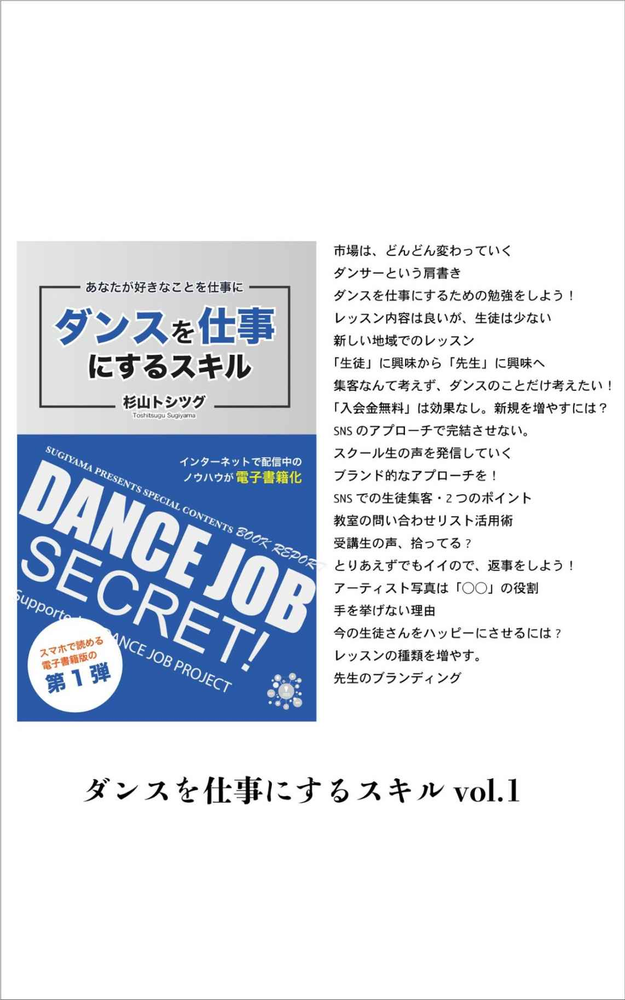
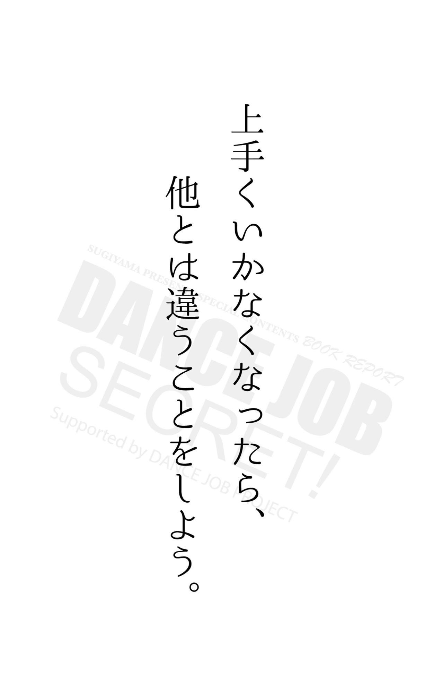
初心者用のクラスを増やすことで安定しやすくなります！
教える側としては、より高度な内容やレベルアップしたものを教えたくなるんですが
教室の運営を考えると、それはマイナス要素です。
というのは、圧倒的に初心者の方が多いからです。
そもそも習い事なので、習わないといけないと言うレベルの方が通うのです。
なので、初心者です。
逆にいうと、自分で出来るようになると学ぶ必要がなくなってきます。
つまり、レベルアップした内容を学びたいという方は、ごく一部の人達になってくるということです。
極端な話、初心者が8割で上級者が2割と考えても良いでしょう。
単純に学ぶというだけであれば
初心者と対象にするべきで、上級者になると学ぶステージから目標設定を変えていかなければいけません。
例えば、インストラクターになる！
またはステージを演出するためのコリオグラファー（振付師）になるといったステージです。
スクール生がレベルアップしていくのであれば、学ぶステージもレベルアップしていく必要があります。
また、そのステージに向かうためのステップ（段階）も考えていがなければいけません。
話が脱線しそうなので、元に戻しますが...
上級者やレベルアップした2割ではなく、全体の8割の初心者クラス・入門クラスにフォーカスして、教室全体のレッスンを組み立てていきましょう。
まずは、そこからがスタートです！
どこをゴールにするか？を考え直してみましょう。
いかに入会してもらうか？ではなく
いかに体験レッスンに参加してもらうか？
を考えるようにします。
そもそもが、体験レッスンを受けた人の入会率が高いのです。
なので、いかに体験レッスンを受けてもらえるかを考えていくようにします。
といっても
気をつけないといけない部分が一点あります。
それは
無料では集めないということ。
お勧めは、500円（ワンコイン）です。
無料で集めると、入会率が低い人
つまり、お金を出さないタイプの人が集まりやすくなります。
無料か500円かが、大きな違いで
全く出さないのと、少しでも出すは全然違うのです。
さらに、レッスンは参加人数が限られているので
その限られたスペースに入会率の低い人が集まるのは勿体ないのです。
無料体験レッスンをおこなっているスタジオは多いですが、今後は、ワンコインレッスンという文化にしていきましょう。
スクールの生徒さんが、レッスンに来なくなる前兆として様々なシグナルがあります。
今回は、その中の1つで
「真っ先に帰っていく」を解説。
レッスンが終わると、急ぐように帰っていく人がいます。
そういう人がいたら、要注意。
これを繰り返していると
その人は、そのうちレッスンに来なくなります。
その理由の1つには、教室内に友達がいないというのがあるでしょう。
レッスン後は、缶ジュースを片手に
余韻に浸るというか、皆んなと雑談をしたりという場面があるものです。
しかしその人は、教室内に友達がいないわけなので、残っていても面白くありません。
よくあるパターンとしては、世代の違う大人の方だったり、男性だったりが多いですね。
そういった方は、なかなか自分の居場所が作れないということもあり、早めに帰っていく傾向があります。
この対処法としては、講師が話し相手になって上げることです。
まず、向こうからは来ませんから
コチラから率先して、話し相手になることです。
先生が話しかけてくれるのは嬉しいので、意外と会話も弾んだりします。
そうしていると、先生とよく話しているということもあり、他の生徒も会話に参加してきたりします。
そこから徐々に打ち解けて、その人も友達や仲間が生まれてくるようになるでしょう。
何か新しい事を導入し始めた時や、物事をスムーズに運びたい時に、よく使っている魔法の言葉があります。
それは「皆さん、そうしてますよ」と言う一言です。
まぁ実際に、そうしてもらってるので本当の事ではあるんですが
このフレーズを、使うか使わないかで大きく違ってきます。
例えば、
相手が躊躇している場合です。
質問でよく多いのが
「全くの初心者なんですけど、できますかね?」と言うものがあります。
これは本当によく質問される事なんです。
答えから言ってしまうと、初心者なので出来ません！
当然ですよね、初心者で出来ると初心者ではなくなります。
今すでにダンスが上手な人も
やはり、最初は初心者なわけなので出来ません。
でも、それを言ってはダメなので
こう伝えます。
「今ダンスが上手な〇〇さんも最初は体験レッスンを受けて、そこで始めるかどうかを決めていました。」
「いま上手な方は皆さん、そういった感じで始めてますよ。まずは一度、体験レッスンから受けてみてはどうでしょう？」
といったように説明します。
これは教室ではなく、他の場合でも使うようにしています。
もちろん、本当にそうしているということが前提ですが、どういった言葉を選ぶのかが大切だと思います。
ダンスだけではなく、キャラクターというか人間を見せることが大事ですね。
もちろん、ダンスは真剣じゃなければいけないというのが前提としてですが
上手いというだけではなく、先生が面白いから受講してるって人も多かったりします。
面白いというだけではない。
人によって色んな要素を持っている。
そこで「キャラクター設定」を意識してみよう！
キャラクター設定をすることで
情報発信の仕方や、自分の方向性が決まりやすくなるのです。
しかし、自分の中にないキャラクターだと、それは嘘になってしまうので
自分が持っているキャラクターの部分を強調して考えていきます。
以前、自分が講師たちに話してきたキャラクター設定を幾つか紹介すると・・・
オシャレな講師がいたので
毎回のレッスン着のポイントを発信していこうと話しました。
今は、インスタを使えば出来るでしょう。
レッスン着にする事で、発信する内容がレッスンに繋がるので
宣伝のようには見えない宣伝効果もあります。
他には、面倒見が良い先生のナンバーワンを目指して！と話したことがあります。
女性の先生です。
その先生に、そのことを話してからはレッスン以外のプライベートでも生徒と交流したり
先生というより友達的なポジションになっていきましたね。
このように、本人が持っている特性を活かして、キャラクター設定することで方向性が決まり、行動も変わり始めます。
◉ここまでの内容は
「ダンスを仕事にするスキルvol.2」の中から幾つかをピックアップして紹介しました。
ダンスを仕事にするスキル 第2弾
https://www.amazon.co.jp/dp/B07FN6BDTB
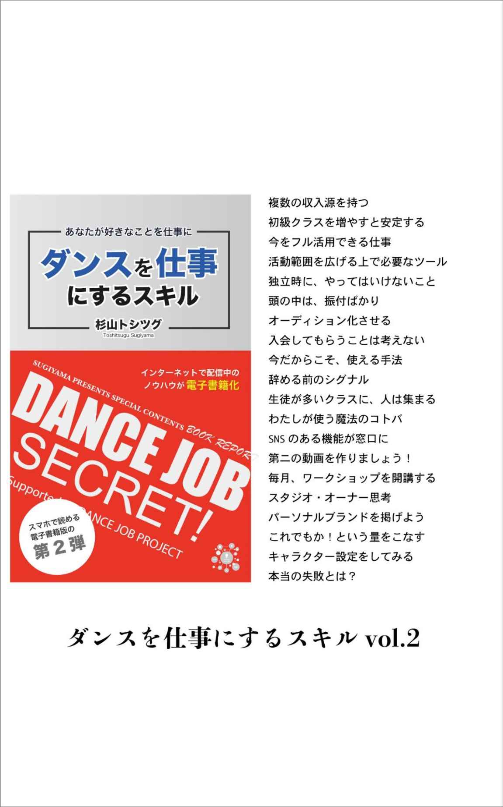
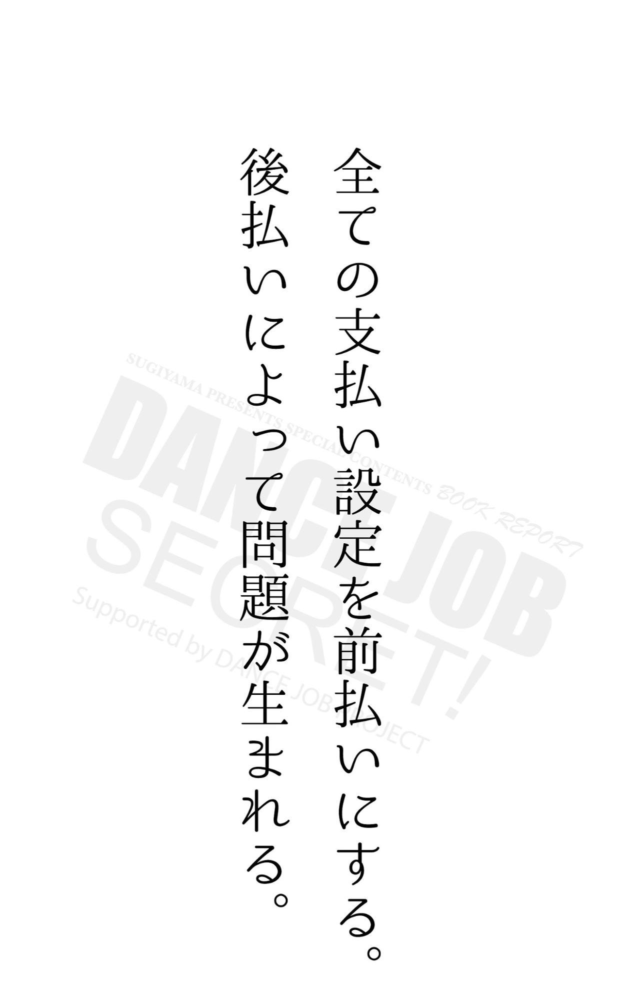
独立して自分のスタジオを持ちたいと言う方は結構いるのではないでしょうか。
１つには、自分のダンスの練習するスペースを持ちたいという欲求が強いと思いますが、注意しておかないと毎月の家賃が大きなリスクとなります。
その中でも問題は、スタジオの空きスケジュールが発生するということ。
レッスンに使用するといっても、実際には使わない時間が発生します。
ちなみに、個人でスタジオを持っている方を何人も知っていますが、実際に空き時間を何とか埋めたい！ということをよく耳にします。
貸しスタジオを始めるという考えは正しいのですが、スタジオをオープンしてからではなく、オープン前に貸しスタジオを借りる人を見つけておければベストでしょう。
実際に自分が開くレッスンに人を呼べるかどうかといった部分も確実ではありません。
エリアが限られた実店舗に人を集めるのは、それなりに難しいことです。
しかし、既に貸しスタジオを借りる人が見つかっている状態であれば
生徒が集まらなかったとしても、家賃収入も入ってくるので、全くゼロという状況は避けられます。
自分の教室よりも、貸りる側の１つというくらいの意識を持って
先に貸しスタジオの体制を整えていくことが大切でしょう。
出来れば、スタジオ開始と同時に
貸しスタジオとしても機能している状態になっているのが理想ですね。
SNSは何のために使うか?
それは対話をするために使います。
画像や動画を投稿することをきっかけに、コメント欄などで観覧者と対話をしていくのです。
この場合の観覧者とは、現在の生徒であり、その保護者の方、ダンサー仲間だったりします。
以下の２つのポイントを意識して、投稿してみて下さい。
1・文字だけの投稿になっていないか？
2・コメントしたくなる投稿になっているか？
文字だけの投稿になっていないか？
というのは、逆の言い方をすると画像や動画を使っているのか？ということです。
文字だけでは、面白みもなく、どんどん流れていくタイムラインでは目立つこともなく、アプローチとしては弱すぎます。
なので、画像または動画を使って投稿していきましょう。
もう一つのコメントをしたくなる投稿というのは非常に大切です。
見る側の立場になって、コメントしたくなる投稿を意識しなくてはいけません。
例えば、
レッスン中に撮影した写真を載せて、自分でレッスンの感想入れたりします。
その際に、問いかける文章が入っていると、コメントも返って来やすくなるのではないでしょうか。
「昨日のレッスンで教えた振り付けは、今までで1番好きな内容かも！」
こういった一言を入れると、共感した生徒さんや観覧者の方からコメントが入りやすくなります。
このように、投稿内容よりも対話が注目されるよう発信していきましょう。
新しい人が入会するまでの流れを考えてみましょう。
突然来て「入会させてください」と言って入会する人は、まずいません。
入会するまでには各段階があって
その前には体験レッスンを受け、体験レッスンの前には見学をするものです。
つまり、見学が1番最初入り口になるわけです。
1・見学
2・体験
3・入会
最初の見学がスムーズに進むと、入会までの流れに乗りやすくなるので、見学をしやすい環境を整えることを考えます。
自分も始めの頃は、生徒としてダンススクールに通った経験があるのですが、やはり見学というものを経験しました。
その時思ったのが、最初の1歩の勇気です。
「見学させて下さい」と入っていく最初の勇気が少し必要なんですよ。
教室に入ると、踊っている生徒以上に目立つ存在なので、できれば目立たないところで見学したいものです。
見学のために一歩、教室に入っていく。
この部分を、ひと押ししてもらうとスッと入っていけるんです。
そういった気持ちを経験していたので、先生たちには見学者が来たことに気づいたら、率先的に（笑顔で）声をかけに行くように指示をしました。
先生にとっても、その習慣が第一印象になるので大切です。
実は、この瞬間が非常に重要なポイントになってきます。
新しい事にチャレンジしていると
「理想と現実とのギャップ」この言葉にぶち当たる時があります。
ある目標を掲げて、行動を始めたものの、いざ進めてみると思うようにいかない。
こういう時は、ティッピングポイントに達するまで頑張りましょう！
ティッピングポイントとは、結果が出てくる瞬間のことです。
新しく物事を始めると、最初の方は上手くいかないことがずっと続きます。
これを専門用語で「プラトー」というのですが、このプラトーが長く続くので、ほとんどの人がプラトー状態で諦めます。
飛行機が飛び立つのをイメージしてみてください。
いきなり走った瞬間に、飛行機が飛ぶようなことはないですよね。
しばらく滑走路を走って勢いがついた後に、ようやく飛び立ちます。
一度、飛び立つとドンドン登って行きますよね。
この飛び立つ瞬間が、ティッピングポイントです。
そして、ティッピングポイントを迎えるためには、もう一つ大切なことがあります。
それは、同じ失敗を繰り返さないということ。
最初は失敗がつきものです。
もっと上手く進めるならば、その失敗は小さい失敗にしていきましょう。
1・ティッピングポイントまで諦めない。
2・同じ失敗を繰り返さない。
この2つを守り、その行動を続けていくことで、成功は近づいてきます。
諦めたら、そこで終わりです。
良い方法を知ったとしても、ほとんどの方が行動しません。
良い話を聞いたで終わりです。
なぜ行動しないかというと
1つには、それが簡単に手に入るからです。
実際に使うと、物凄い効果がある方法も良い話で終わってしまうのです。
では、そういった良い方法を実践するにはどうすればいいでしょうか？
それは、その話を聞くことをにリスクを持つということです。
例えば、
あなたが東京に住んでいたとして、私の話を直接聞こうと思って、私の住む所まで訪れるとします。
そうすると、新幹線で片道15,000円以上、往復で約4万円近くかかります。
それでも、話を聞きに行くことによって、あなたはその話した内容を実践するようになるでしょう。
「往復4万円もかけて、ここまで話を聞きに来たんだから、これは実践しないと元が取れない！」といった考えを持ち、実践するようになります。
「そこまでして話を聞きに来るのであれば、本気で伝えよう！」と話す側も力が入るでしょうから、その効果はもっと上がるはずです。
「いゃでも私は、実際に足を運んだつもりで無料で情報を聞きます」
と考える方もいるかもしれませんが、それは自分の中でバレているので無理です！
自分は騙せません。
◉ここまでの内容は
「ダンスを仕事にするスキルvol.1」の中から幾つかをピックアップして紹介しました。
ダンスを仕事にするスキル 第3弾
https://www.amazon.co.jp/dp/B07FY4JTNB
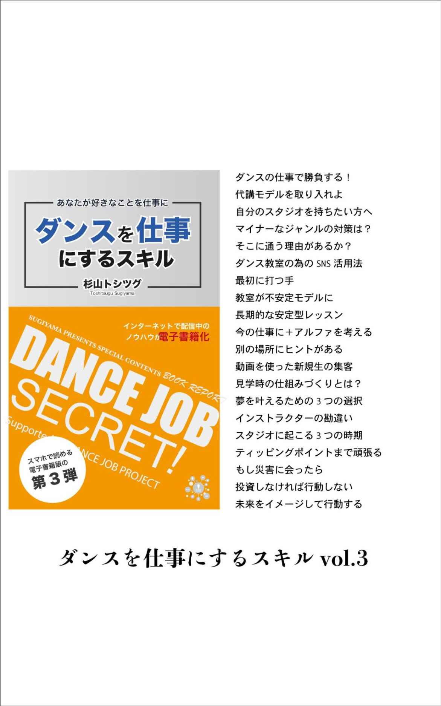
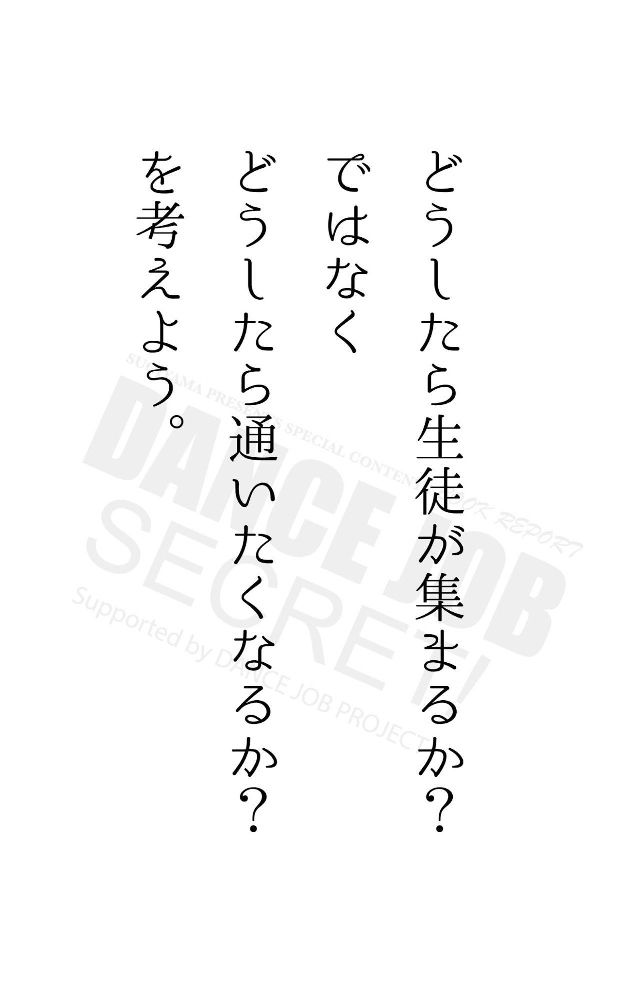
初級クラス・中級クラス・上級クラスといったように、よく綺麗にレッスンを分けている教室がありますが、これは上手くいきません。
というのも、レベル内容の割合を見ると、圧倒的に初心者の方が多いからです。
それは多分6〜8割くらい、私は8割だとも思っています。
では、なぜそのようにレベルが偏るのか?
これは少し考えると分かるのですが、上手くなると習うことをしなくなります。
つまり、独学になっていくのです。
そもそも、出来ない人が出来るようになるために習いに来るわけですから、上達するにつれ習う人が減っていくのは必然です。
なので、こういった習い事の特性を理解して組み立てるのであれば、上級もしくは中級は、毎週のレッスンにするのではなく、月1回目の特別レッスンとして（ハイレベルな内容を）教えた方が反応が良いわけです。
こういった特性を理解して、私が取り組んだレッスンの仕組みは
教室のレベルは「基本レベル」にして
応用レベルは、講師が直接自分のレッスンを開くといったものにしました。
なので、教室はレンタルで講師に貸して、教室のレンタル代だけを受け取ります。
いわば『教室内独立モデル』を作ったわけです。
そうすると、その講師は月1回のその応用レッスンについては
複数ある基礎クラスの生徒を声をかければよいだけ。
ワンレッスン方式なので、生徒も通常のレッスンを辞めていくとまでにはなりません。
教室のレッスンに限らず、物販を始めるとよいでしょう。
物販を始めるときは、Tシャツなどからスタートして、発表会などのイベントを開催するタイミングで導入するのが良いですね。
出演の際の衣装の一部にするなど、必ず購入しなければいけないというルールを付ければ売れます。
今ではオリジナルアイテムの制作を引き受ける業者（ECサイト）の多く増え
Tシャツだけではなく、スマートフォンのケースやノートといった小物など取り扱いアイテムの種類も豊富に揃っています。
デザインがあれば、インターネット上から無料登録したマイペースへアップロードするだけです。
スマートフォン用アプリも出ており、スマートフォンからも同じ事ができます。（もちろんパソコン用サイトのみというところもあります）
簡単になってきましたね。
同時に、そのアップロードしたデザインのアイテムを販売することも可能です。
とくに手数料を取られる事はなく
売れた分から数%かが手数料として差し引かれる成果報酬型のシステムになっています。
以前だと、大量に発注して
それを手振りで売っていかなければいけなかったものが、販売ページを案内すれば在庫を抱える事はありません。
この在庫を抱えないというのは嬉しいですね。
教室のレッスンが終了したからといって、すぐに帰るのはやめましょう。
とはいえ、連続のレッスンなどを担当していたら、すぐに移動や次の準備が必要なってくるでしょう。
しかし、レッスン後の生徒とのコミュニケーションは。思っている以上に重要です。
長期的に活動する上でも、レッスン後のコミニケーションは大切です。
その中でも、レッスンが終わってしまう直前、解散する前に生徒達とちょっとしたゲームをすることをお勧めします。
きっちりレッスンを終了して解散となると、帰っていく人はすぐに帰ってしまいます。
なので、終わる直前にコミニケーションの為の短い時間を作れば、ある意味すぐに帰る人も強制的に参加するわけです。
ここで、私がおこなっていた方法は
生徒の名前当てクイズです。
私が何人の生徒の名前を覚える気いるかをゲームにしてわみんなの前で行います。
実はこれがすごく喜ばれるのです。
そもそも、自分の名前を覚えてもらえてるだけで嬉しいものです。
たまに失敗して名前を間違うのですが「よし！今ので覚えきった」と言ったセリフで笑いを取ることもあります。
これは、答えが正解か不正解かが問題ではありません。
皆んなと一緒におこなう、そのコミニケーション自体が大切なのです。
当然ですが、その地域で教室をしてるのは、あなただけではありません。
他の教室も開かれているわけで
もちろん自分の教室の生徒も、その情報を知るわけです。
これから、よく起こるパターンをお話ししますね。
あなたの生徒が
他の教室や、その教室の先生と知り合いになっていくと、その教室に興味を持ち始めます。
または、友達が他の教室に通っていて、その教室の発表会を見に行く機会があったりします。
そうしていると、そのうちあなたの教室と他の教室と両立して通うようになるかもしれません。
それは、しばらく何ヶ月か続くのですが、金銭的にも長くは継続できないので、最終的にはどちらかの教室を選ぶようになります。
または、どちらかには月謝で通って
どちらかには1レッスンで受講するといった流れになるかもしれません。
そうなったときに、辞めていくのは1レッスンの方でしょう。
これは良い悪いとか全く関係ありません。
こういった時代には起こるという心構えでいて下さいという事です。
このダンス教室のマーケットは、毎年拡大しているので、そういったことが起こるのは必然なのです。
他と同じことをしていると比較されて、いずれ去っていきます。
あなたは、自分の個性を使って
どんどん新しいことに挑戦し、アピールしていきましょう。
あなたの仕事がダンスの先生だからといって、教室だけの活動をしてはいけません。
教室の運営と同時にイベント活動、できれば個人活動をした方が良いでしょう。
教室のブランドと個人のブランドを、同時に築くようにしますを
教室とは、また違う個人の活動広げていくのです。
私自身、教室の発表会だけではなく
個人で主催者（オーガナイザー）になって定期的にイベントを開催していました。
教室だと発表の場も、生徒が中心になるので人間関係が狭くなってしまいます。
一人のダンサーであるので
個人でイベントを開き、そこに知り合いやゲストでダンサー、ダンスチームを読んで活動していきましょう。
当然そこにも生徒を参加させるといったことも考えて、上手く両立させていくようにします。
ちなみに、個人で活動する場合は
教室を始めていなくても関係ありませんが、あなたのダンサーとしての人脈が必要となってきます。
そうはいっても可能であれば
やはり教室での人脈もプラスさせた方が、人が集まるので、やはり両立がいいと思います。
ビジネスの手法で『パラレルキャリア』というものがあります。
これは簡単にいうと、収入の柱をできるだけたくさん作ると言うことです。
なので、教室の柱ではなく
あなた個人の柱を作って、できるだけ多くの入り口を作るようにしていきましょう。
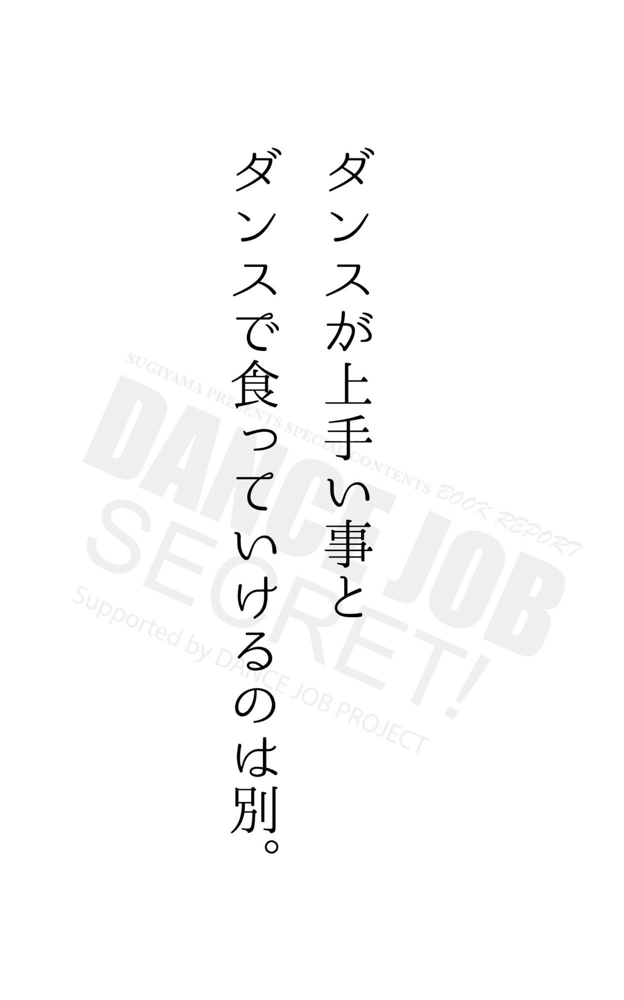
2007年に『ダンスで食っていく方法』として、私が情報発信し始めた頃は、ダンスを仕事にしていく情報は存在しませんでした。
今では、そういった情報も目につくようになりましたが
そういった内容は、いろいろ発信していく中での、1つのものでしかありません。
ブログのカテゴリーの1つみたいなものです。
徹底してはいないので
私は、この情報に徹底するために何冊もの本を出版しました。
また大規模なイベント活動、東京や大阪といった都市ならではの内容だと
日本全国を対象とした場合に再現性がないので、最も身近な教室運営をメインにしています。
ダンス教室や発表会、また地域のイベントといったテーマであれば、全国にも存在するからです。
何処に住んでいても、実践できる内容に特化して、今後も発信していこうと思っております。
私が発信している他の情報も是非チェックしてみて下さい。
それでは、本書を最後まで読んでいただきありがとうございます。
杉山トシツグ
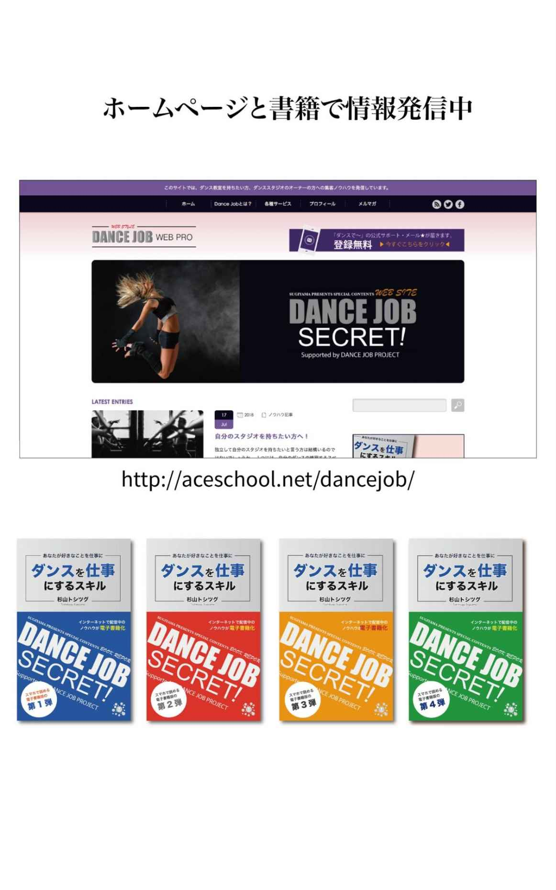
■ダンスジョブ
http://aceschool.net/dancejob/
■無料レポート「自分で教室を始める方法」
http://123canvas.net/danceworks/report201603
■ダンスで食っていく方法のFacebookページ
https://www.facebook.com/dancelifework/
■ダンスで食っていく方法のツイッター
https://twitter.com/taku_dance
■ダンスで食っていく方法メールサポート
http://123canvas.net/danceworks/mailmagazine
■ダンスで食っていく方法の法ウェブサイト
http://123canvas.net/danceworks/
わたしはダンスで食っていく
https://www.amazon.co.jp/dp/B01J413NQ8
ダンスを仕事にするスキル 第1弾
https://www.amazon.co.jp/dp/B07F9K9T1V
ダンスを仕事にするスキル 第2弾
https://www.amazon.co.jp/dp/B07FN6BDTB
ダンスを仕事にするスキル 第3弾
https://www.amazon.co.jp/dp/B07FY4JTNB
はじめての教室ビジネス
https://www.amazon.co.jp/dp/B07G6V21MX
絶対に成功させる！フラッシュモブの始め方
https://www.amazon.co.jp/dp/B01MQ5GL3L
企業はダンスを取り入れよ！
https://www.amazon.co.jp/dp/B01MZ7AK8A
未来のダンスメソッド
https://www.amazon.co.jp/dp/B01M8M17LG
ダンス独学法
https://www.amazon.co.jp/dp/B06XXQ2FG6
ダンスを仕事にするスキル第1弾
https://www.amazon.co.jp/dp/B07F9K9T1V
TKOコンセプトブックvol.1
https://www.amazon.co.jp/dp/B07CWSW678
TKOコンセプトブックvol.2
https://www.amazon.co.jp/dp/B07DDGTTMN
ストック型コンテンツ
https://www.amazon.co.jp/dp/B07G82ZSZV
スマホ時代の見込み客が集まるホームページの作り方
https://www.amazon.co.jp/dp/B01N4EQMM5
スマホ時代の個人で始めるビジネスツールの選び方
https://www.amazon.co.jp/dp/B06XC8SV18
スマホ時代のSNSで顧客とつながるコンテンツ活用術
https://www.amazon.co.jp/dp/B0753LKKBN
スマホ時代の収入の入り口を増やす電子出版のヒント
https://www.amazon.co.jp/dp/B07FS6DFTR
『スマホで稼ぐ・5つのレッスン』
https://www.amazon.co.jp/dp/B01M28EXSS
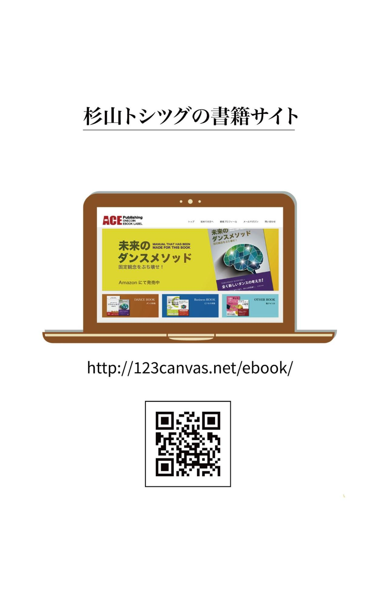
杉山トシツグ
1990年 ダンスに出遭う。
4年後、ダンス修行のためNYにてニューヨークに て集中レッスン。
帰国後に、インストラクター対象のHIPHOPワー クショップを開催。
1996年 集中レッスンのため再びニューヨーク へ
HOUSE・HIP HOPダンサー "ブライアン" のプライベートレッスンを受ける。
東京へ生活の場を移し、東京のカリスマダンサー BOBBYを師事。
翌年から、同時に地元岡山でのレッスンを始める。
1999年 本格的にスクールを開校。
地元ダンスコンテストの優勝チームを育てる。
・FM香川主催 リスナーズフェスタ ダンスコンテスト優勝
・エアロビック連盟主催 パフォーマンス部門優勝
・スクール出身者から2名 TRF バックダンサー (広島公演) に合格。
・タウン情報おかやま2000年12月号のアーティ スト特集に掲載される。
2001年 表町カウントダウン、高校生フェス ティバル
JAZZフェスティバルのダンスステージをプロ デュース。
岡山南高校吹奏楽部 ・定期演奏会でのステージ振付け
( 平成14年12月22日・シンフォニーホール )
2006年 生徒チーム『BILL KILL』がチボリ・ダンスコンテストで優勝。
その後、次の大会にも優勝し見事、2連覇優勝を果 たす。
岡山県高等学校総合文化祭 岡山県高等学校ダンス交流会にゲスト講師として招待される。
チボリ選手権の決勝大会でスクール出身チームの2 組が同時入賞。
岡山県高等学校が主催するダンス講習会が岡山武道 館で開催され、その講習会の講師として招待される。
2009年 ダンス初心者用のコース型レッスン 「初級コース」を開始。
5月には、発表会「STREET SPRIT」をシンフォニーホール（1400人規模）で開催。
2010年 イオンで開催されているダンスコンテス ト「Brush on」での審査員
2011年 10月に開催されたファッション情報誌PLUG主催の「PlugNight（5000人規模）」の
ダンスステージのプロデュース等
2015年 イオンモール内「みらいホール」にて発表会を開催。
2016年 未来のダンスメソッドを出版
ダンスを仕事にするスキル第4弾（Kindle Edition）
2018年8月 第1刷発行
著者 杉山トシツグ
発行人 杉山トシツグ
・ 本書は著作権法上の保護を受けています。本書の一部または全部について、著者である杉山トシツグからの許諾を得ずに、いかなる方法においても無断で複写、複製することは禁じられています。